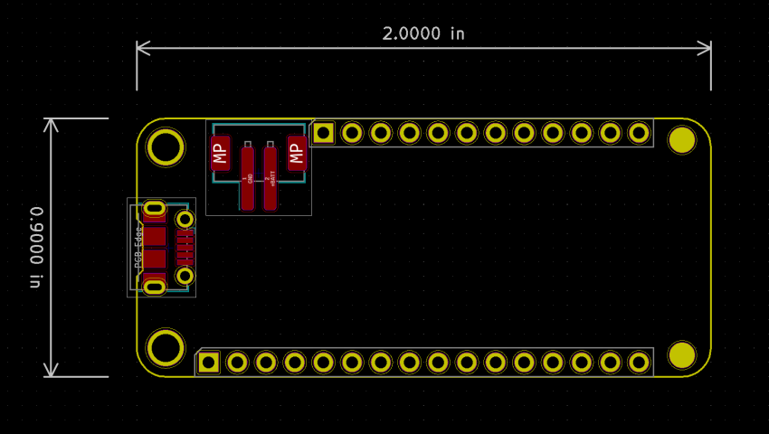

This project template was created based on the Adafruit Feather Specification.
A starting layout for designing your own Feather board, with an outline, mounting holes, headers, Micro-USB connector, and JST PH battery connector.
The PCB is unrouted. Add and verify the controller, power circuitry, and application circuit before fabrication. The source uses legacy KiCad 5 formats.
The board outline looks like the following:

This project is open source.
(c) 2019 arturo182
Distributed under the upstream CC BY-SA 4.0 licence with the KiCad library exception.